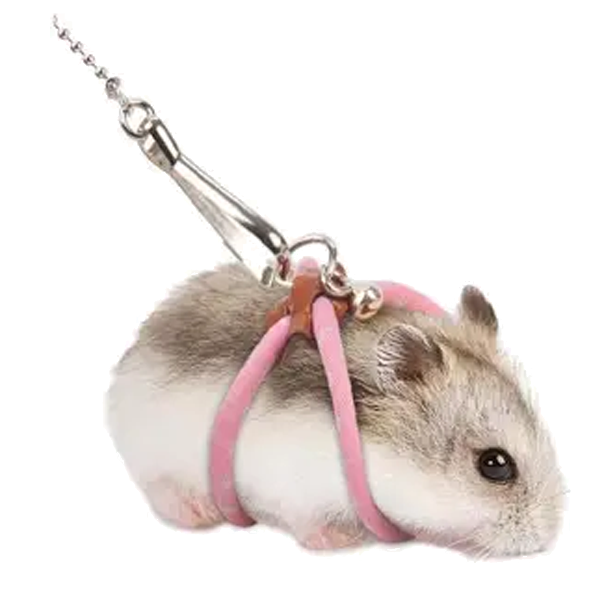

Small Pet Leash: Because Your Hamster Deserves Freedom
Introducing the Small Pet Leash—a leash for your hamster, guinea pig, rabbit, or any pet too small to even walk in a straight line. Why let your tiny furry friend roam freely in their cage when you can take them for walks around the house or the park? It’s the perfect way to give your pet the illusion of freedom while you control every step they take.
Perfect for giving your pet an "adventure" that’s entirely under your control. Whether you're strolling down the street or just pacing around your living room, the small pet leash ensures that your pet has a "great time" on their walk—at least as long as you don't strangle them with the leash.
Is it necessary? Definitely not. Is it practical? Not at all. But is it hilarious? Absolutely.
Key Features:
Buy it now and make your pet's dreams of freedom come true—one awkward walk at a time.